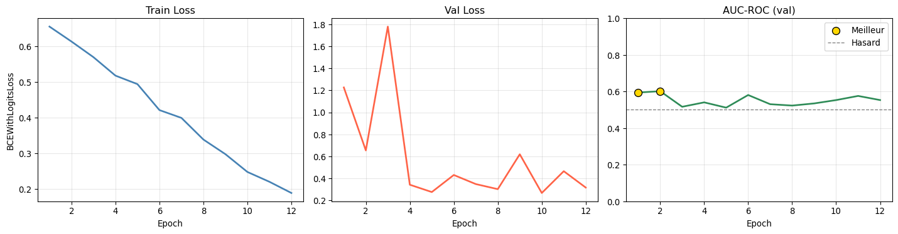
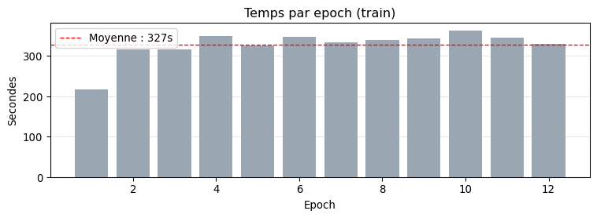
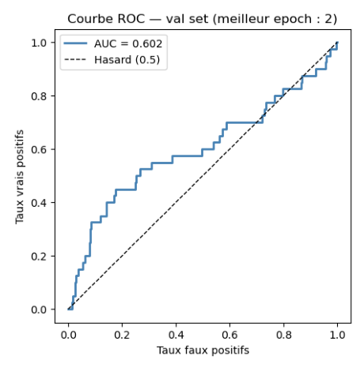

Images train : 3421 (cancer=137)
Images val : 878 (cancer=40)
Ratio sain/cancer (train) : 24.0:1ResNet18 — Entraînement sur mammographies RSNA
Visualisation du code et des résultats d’entraînement
Partie I — Le problème et les données
1. Contexte : classification binaire de mammographies
On entraîne un ResNet18 à distinguer les mammographies saines des cancéreuses.
Le dataset RSNA est fortement déséquilibré : seulement ~4 % de cas cancer. Avec ~950 exams × 4 vues = ~3 800 images au total.
Partie II — Le code expliqué
2. Le dataset : du PKL aux images
Chaque exam dans le fichier data.pkl contient 4 vues (L-CC, L-MLO, R-CC, R-MLO). La fonction _make_entries() aplatit cette structure en une liste de paires (chemin_image, label).
# fine_tuning/train_resnet.py — _make_entries()
def _make_entries(exam_list):
entries = []
for exam in exam_list:
label = int(exam["cancer_label"]["malignant"]) # 0 ou 1 au niveau exam
for view in ["L-CC", "L-MLO", "R-CC", "R-MLO"]:
for rel_path in exam.get(view, []):
p = IMAGE_DIR / (rel_path + ".png")
if p.exists():
entries.append((p, label)) # chaque vue = un échantillon
return entriesAttention au leakage : le split train/val est fait au niveau exam (via
load_and_split()), pas au niveau image. Sinon des vues du même patient se retrouveraient des deux côtés.
3. Les transformations appliquées aux images
# fine_tuning/train_resnet.py — ImageDataset
transforms.Compose([
transforms.Grayscale(num_output_channels=3), # PNG gris → 3 canaux (ResNet attend RGB)
transforms.Resize(512), # redimension côté court à 512px
transforms.CenterCrop(512), # crop carré central
transforms.RandomHorizontalFlip(), # augmentation (train uniquement)
transforms.RandomRotation(5),
transforms.ColorJitter(brightness=0.15, contrast=0.15),
transforms.ToTensor(),
transforms.Normalize( # normalisation ImageNet
[0.485, 0.456, 0.406],
[0.229, 0.224, 0.225]
),
])Les images sont déjà normalisées
[0, 255]uint8 par le preprocessing. La normalisation ImageNet ici les recentre pour coller aux statistiques sur lesquelles ResNet a été pré-entraîné.
4. Gérer le déséquilibre : WeightedRandomSampler
Avec 24 images saines pour 1 cancer, le modèle peut tricher en prédisant toujours “sain”. Le WeightedRandomSampler force chaque batch à contenir 50 % cancer / 50 % sain.
# fine_tuning/train_resnet.py — _make_sampler()
labels = [e[1] for e in entries]
n_pos, n_neg = sum(labels), len(labels) - sum(labels)
weights = [1/n_pos if l == 1 else 1/n_neg for l in labels]
# → les images cancer sont tirées ~24× plus souvent que les saines
sampler = WeightedRandomSampler(weights, num_samples=len(weights), replacement=True)5. L’architecture ResNet18
# fine_tuning/train_resnet.py — build_resnet18()
model = models.resnet18(weights=None) # pas de pré-entraînement ImageNet
model.fc = nn.Linear(512, 1) # remplace la tête 1000-classes par 1 logitLa sortie est un seul logit (pas de softmax). La loss BCEWithLogitsLoss applique la sigmoïde en interne, ce qui est plus stable numériquement.
Input (B, 3, 512, 512)
↓ conv1 + bn + relu + maxpool
↓ layer1 (2× BasicBlock, 64 filtres)
↓ layer2 (2× BasicBlock, 128 filtres)
↓ layer3 (2× BasicBlock, 256 filtres)
↓ layer4 (2× BasicBlock, 512 filtres)
↓ avgpool global → (B, 512)
↓ fc Linear(512 → 1)
Output (B,) — logit de malignité6. La boucle d’entraînement
optimizer = Adam(model.parameters(), lr=1e-4, weight_decay=1e-5)
scheduler = CosineAnnealingLR(optimizer, T_max=epochs)
loss_fn = BCEWithLogitsLoss()Le learning rate suit un cosinus décroissant : il part de lr, descend doucement vers 0 sur T_max epochs. Cela évite les oscillations en fin d’entraînement.
Partie III — Résultats
7. Hyperparamètres utilisés
Epochs : 50
Batch size : 24
Learning rate : 0.0001
Weight decay : 1e-05
Image size : 512×512
Device : cuda8. Courbes d’entraînement

Meilleur epoch : 2 | AUC = 0.6016 | val_loss = 0.65429. Temps par epoch

10. Courbe ROC (meilleur epoch, val set)

11. Tableau récapitulatif par epoch
| Train Loss | Val Loss | AUC | Temps (s) | Best | |
|---|---|---|---|---|---|
| Epoch | |||||
| 1 | 0.6560 | 1.2263 | 0.5943 | 217 | ✓ |
| 2 | 0.6142 | 0.6542 | 0.6016 | 316 | ✓ |
| 3 | 0.5703 | 1.7794 | 0.5165 | 316 | |
| 4 | 0.5185 | 0.3423 | 0.5405 | 348 | |
| 5 | 0.4947 | 0.2757 | 0.5116 | 325 | |
| 6 | 0.4218 | 0.4308 | 0.5807 | 346 | |
| 7 | 0.3999 | 0.3482 | 0.5305 | 333 | |
| 8 | 0.3392 | 0.3021 | 0.5230 | 339 | |
| 9 | 0.2982 | 0.6190 | 0.5347 | 342 | |
| 10 | 0.2483 | 0.2673 | 0.5530 | 363 | |
| 11 | 0.2208 | 0.4653 | 0.5757 | 344 | |
| 12 | 0.1893 | 0.3165 | 0.5531 | 330 |